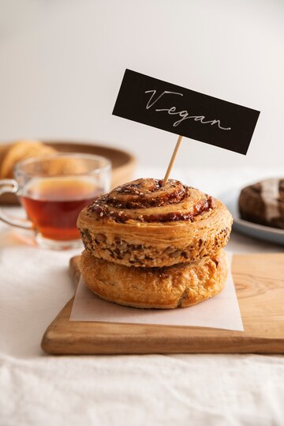

Рис, гречка два отличных источника углеводов. Именно их при диете можно употреблять в небольших порциях. Если уж без кофе совсем никак, тогда лучше пить его уже после еды, и с добавлением молока. Для правильного перекуса прекрасно подойдет яблоко, стакан кефира или горсть орехов. Правильный завтрак спортсмена или человека с высокой физической активностью, отличается от завтрака обычного человека. Здоровое питание укрепляет иммунитет, особенно если совмещать его с занятиями спортом и прогулками на свежем воздухе.
а. Пирожное "Vegan"
 б. Кроусаны